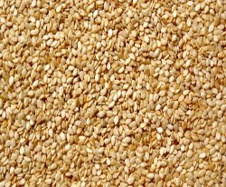

Pulses Products

Seeds
A seed is a small embryonic plant enclosed in a covering called the seed coat, usually with some stored food.more...

Hulled Sesame Seeds
Sesame (Sesame indicum) is one of the oldest cultivated plants in the world, prized as an oilseed for at least 5,000 years.more...

Cummin Seeds
In the culinary arts, Cumin is a spice made from the dried seed of a plant known as Cuminum cyminum.more...